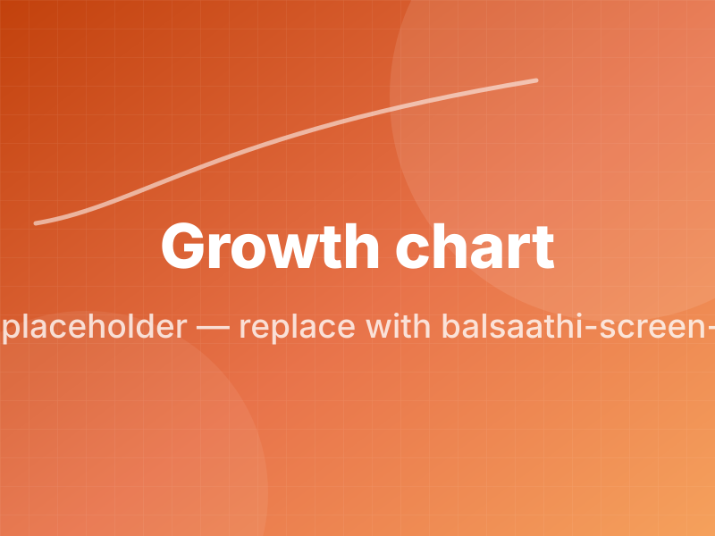
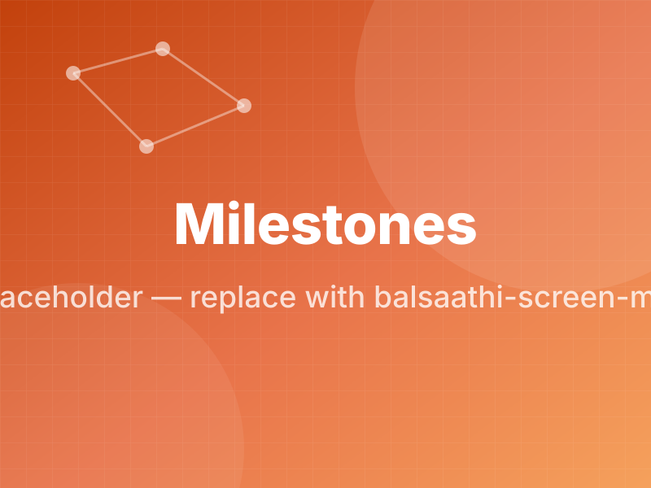
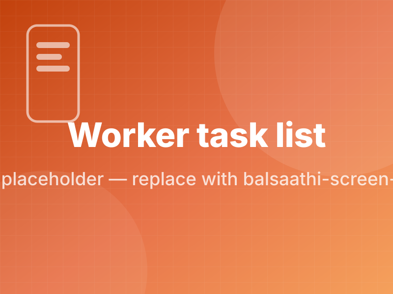
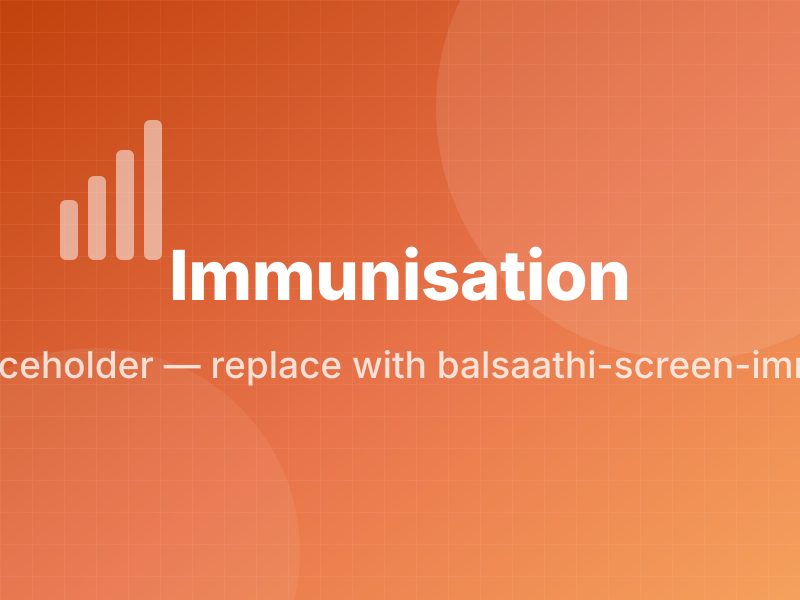
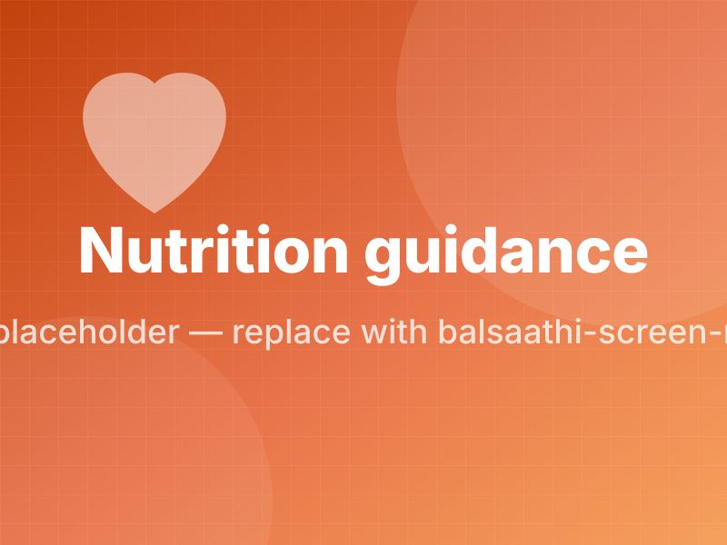
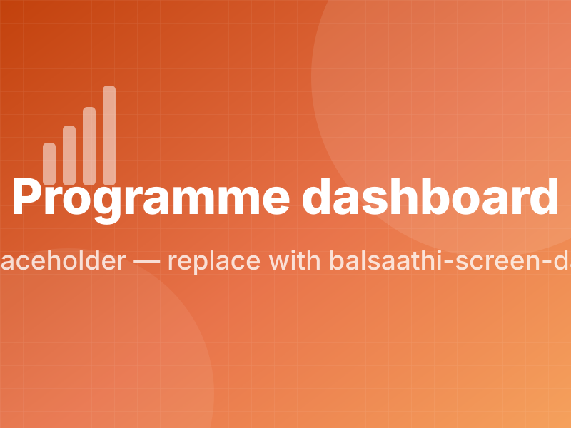

BalSaathi — every child's growth, tracked with care.
An AI-powered maternal and child healthcare platform connecting parents, pregnant women, Anganwadi centres, doctors, rural schools and government departments around one continuous record of a child's health and development.
For parents, mothers, fathers and pregnant women
Growth charts you can read at a glance, developmental milestones for your child's exact age, immunisation reminders that arrive before the date rather than after it, feeding and nutrition guidance appropriate to your child's stage, and short daily activities that support learning at home. In Marathi and English, with audio for every screen so that reading confidence is never a barrier.
For Anganwadi workers and supervisors
A tool that reduces register work rather than adding to it. The day's beneficiary list arrives already prioritised by risk. Every measurement returns an interpretation and a counselling script immediately. Home visits are planned automatically and recorded in under a minute. Monthly reports generate themselves from data already captured. All of it works with no network for extended periods.
For doctors, paediatricians and nutritionists
A child's complete growth history, immunisation record and milestone profile available at the point of care, shared only with the family's explicit and revocable consent. Standardised measurement and WHO-based interpretation mean the data arriving in your consulting room is comparable and trustworthy.
For rural schools and preschools
Attendance, observation-based assessment and a play-based early learning curriculum aligned to India's foundational stage framework. Teachers record what a child can actually do rather than assigning grades, and parents receive a progress profile instead of a report card of adjectives.
For government departments and NGOs
Live centre, block and district dashboards built on data captured once at source, with a verifiable audit trail, India-resident encrypted storage and reporting formats that match existing requirements. Designed to complement ICDS and Poshan Abhiyaan rather than duplicate them.
Child growth data is scattered. Early signals get missed.
Undernutrition and developmental delay are most reversible when they are caught early. In much of India they are caught late — not because nobody is measuring, but because the measurement is written into a paper register and only reappears weeks later in an aggregate that has lost the individual child.
Meanwhile the family, who could act daily, receives nothing back. The frontline worker who collected the data gets no interpretation to help her act on it. The doctor sees a child for the first time with no history. And the department sees a number that is already out of date.
One record. Every caregiver. Timely action.
- Measured once, at the point of contact, on a phone that works offline.
- Interpreted immediately against WHO growth standards, with a plain-language explanation.
- Visible to the family, the worker, the clinician and the programme — each seeing exactly what they are entitled to see.
- Escalated automatically when a reading crosses a threshold that needs attention.
Built for real field conditions
Every feature below is designed against the same constraint set: no network, entry-level phone, limited reading confidence, and consequences that matter.
Growth monitoring
Weight, height, MUAC and head circumference captured with plausibility checks, and interpreted against WHO child growth standards with automatic flagging of readings that need attention.
WHO growth charts
Weight-for-age, height-for-age, weight-for-height and BMI-for-age charts rendered clearly enough for a parent to understand and precisely enough for a clinician to use.
Developmental milestones
Age-appropriate checklists across motor, language, cognitive and social domains, with guidance on what to do when a milestone is delayed — and never a diagnosis.
Immunisation tracking
Schedules aligned to India's Universal Immunisation Programme, with reminders before the due date and a clear record of what has been given.
Nutrition & feeding
Breastfeeding support, complementary feeding guidance from six months, and practical, locally appropriate food suggestions rather than generic dietary advice.
Pregnancy support
Antenatal visit reminders, week-by-week guidance, danger-sign awareness and preparation for delivery and early feeding, for mothers and their families.
Early learning activities
Short, play-based daily activities using materials families already have, supporting language, motor and cognitive development from infancy to school readiness.
Offline-first operation
Full functionality with no network for extended periods, with conflict-safe synchronisation when connectivity returns. A recorded measurement is never lost.
Marathi-first with audio
Written for Marathi speakers rather than translated into Marathi, with audio playback on every screen so that reading confidence is not a barrier to guidance.
Automated reporting
Statutory and supervisory reports generated from data already captured, with no additional entry required from the frontline worker.
Escalation & referral
Readings that cross a critical threshold raise a tracked referral that cannot be closed without an outcome — and the worker who raised it is told what happened.
Consent & privacy
Granular, revocable consent for every category of sharing, encryption in transit and at rest, India-resident storage, and no behavioural advertising of any kind.
What it looks like in use






Six groups, one shared record
Parents & families
Mothers, fathers and grandparents caring for a child from pregnancy to six years, including families where the primary caregiver reads Marathi more comfortably than English.
Pregnant women
Guidance, reminders and danger-sign awareness through pregnancy and into the first weeks after birth.
Anganwadi workers
The frontline of India's child development system, and the group whose time savings determine whether any tool like this actually spreads.
Doctors & health staff
Paediatricians, gynaecologists, nutritionists and health workers who need a child's history at the point of care.
Rural schools & preschools
Teachers delivering early childhood education who need a curriculum, an assessment method and a way to communicate progress to parents.
Government & NGOs
Departments, districts and programme teams who need timely, verifiable data without adding to the burden on frontline staff.
The first thousand days decide a great deal
Nutrition and stimulation in a child's earliest years shape physical growth, cognitive development and lifelong health. The interventions that work are well understood and inexpensive. What has been missing is the information system that tells someone, in time, which child needs one.
Healthcare impact
Standardised measurement and immediate interpretation make a faltering growth pattern visible when it appears.
Child development
Milestone tracking and daily activities give families a concrete way to support development at home.
Maternal care
Antenatal support, danger-sign awareness and early feeding guidance through the highest-risk period.
Government collaboration
Complements ICDS and Poshan Abhiyaan and reduces, rather than adds to, frontline reporting burden.
Digital transformation
One capture at source serves the worker, the family, the supervisor and the department simultaneously.
Offline capability
Works where the need is greatest — in places where connectivity cannot be assumed at all.
What it is built on
Deliberately conservative technology choices in the foundations, so that the interesting engineering can go into the parts that are genuinely hard: synchronisation, interpretation and language.
Mobile
- Flutter for a single codebase
- Local SQLite store
- Conflict-safe sync engine
- Under a tight install footprint
Backend
- API services with role-based access
- PostgreSQL as the system of record
- Event-driven escalation handling
- Complete audit logging
Cloud
- India-region deployment
- Infrastructure as code
- Automated backup and recovery
- Monitoring and alerting
AI
- Risk pattern detection
- Vernacular language support
- Voice interaction
- Content personalisation
Six design decisions most platforms do not make
- Offline is the default state, not a degraded mode. The application is designed assuming there is no network and treats connectivity as a bonus.
- Marathi is the authoring language, not a translation layer added at the end. Audio support means low reading confidence does not reduce the guidance received.
- Data returns value to whoever entered it. A worker who records a measurement receives an interpretation immediately. Nothing is collected purely for reporting.
- The platform never diagnoses. It flags, explains and refers. Clinical judgement stays with clinicians, and the product is explicit about that boundary everywhere.
- Safety comes first. Growth, milestone and immunisation tracking is designed so families and Anganwadi workers can catch health and developmental risks early.
- Children's data gets the strictest handling we apply anywhere — granular consent, purpose limitation, India-resident encrypted storage, and no behavioural advertising ever.
Frameworks we build against
BalSaathi is designed to align with established clinical, educational and regulatory frameworks rather than to invent its own.
See BalSaathi in action
A walkthrough with the product team, for government departments, NGOs, CSR teams, hospitals and school networks.